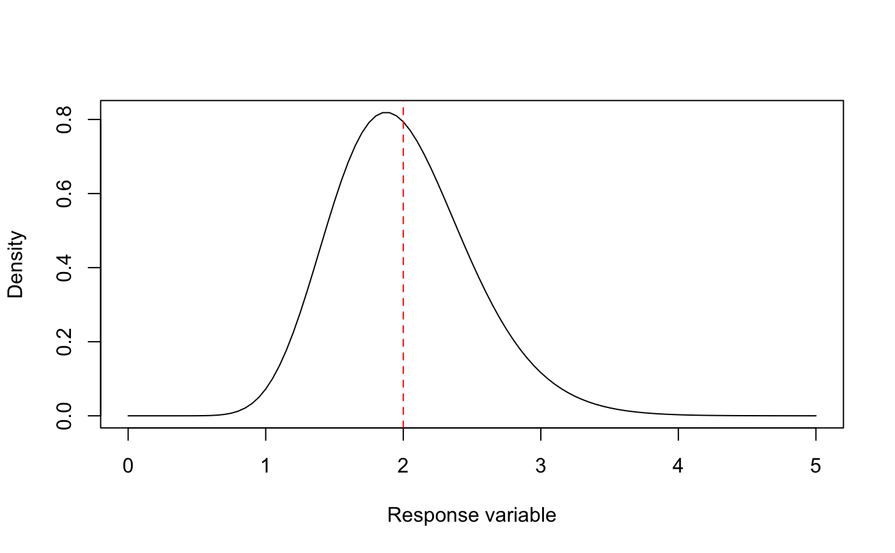

A function that finds the shape and rate parameters required by the Gamma distribution given the observed
mean mu and standard deviation sigma of the response variable. Parameters are found numerically using a
two-dimensional Nelder-Mead optimization algorithm.
get_gamma_params(mu, sigma)
| mu | the desired mean of the Gamma distribution |
|---|---|
| sigma | the desired standard deviation of the Gamma distribution |
a named numeric vector giving the shape and rate parameters of the Gamma distribution
Other utility:
get_admin_level(),
get_beta_params(),
get_pop_vec(),
get_unique_coords(),
get_unique_ids()
mu <- 2 sigma <- 0.5 prm <- get_gamma_params(mu, sigma) prm[1]/prm[2] # mean#> shape #> 2#> shape #> 0.5